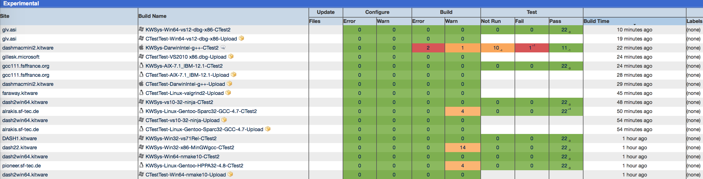
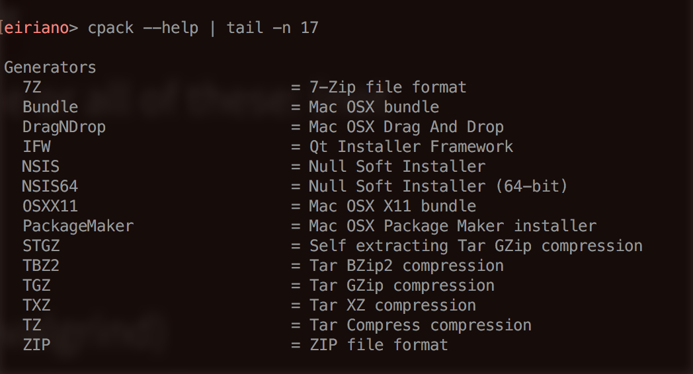
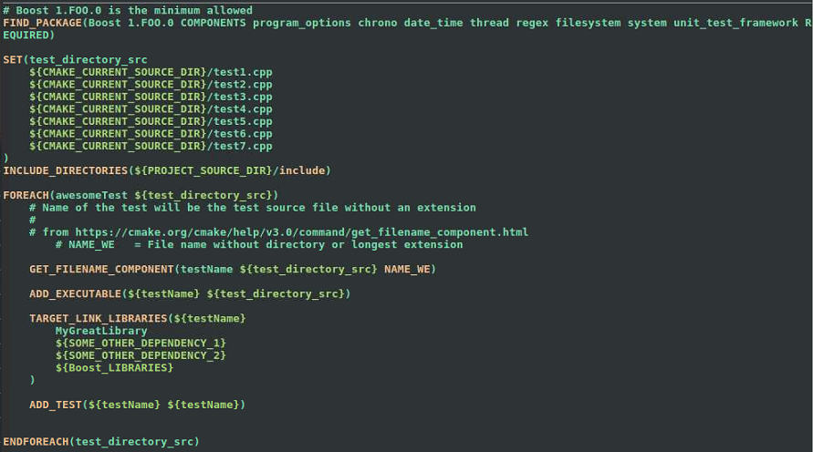

CMake: an Overview
Eirian Owen Perkins
CSCI 5828 - Presentation 4
Table of Contents
- Introduction
- What is a Build System
- Unit is Build Automation
- Motivation
- Build System Requirements
- CMake, CTest, and CPack
- Discussion and Conclusions
Introduction
- The image in the previous slide gave some terminology, let's go over it
- Build System
- Build Directory
What is a Build System
- "Build systems are software tools designed to automate the process of program compilation. Build systems come in various forms, and are used for a variety of software build tasks."[1]
- map files to an executable
- assumption: "each of the build actions are idempotent"
- none of the build actions are dependent on another
- impact: the build system can make optimizations -- skip build actions that have already been performed
- Why is this useful? If you are building a large project and you only want to test small changes, you probably only want to rebuild the parts that changed.
What is a build directory?
- Simply the directory the build is written to
- It is useful to have a separate build directory than source directory
- Projects can get to be very large
- Multiple executables can be created from shared code
- ...So don't clutter up the source folders
- Especially if you are using revision control
- And when a separate team is responsible for the builds
What is Build Automation[3]
- Automating a software build
- Running automated tests
Motivation
- There are several advantages to build automation [5]
- Build automation is a prerequisite for "continuous integration and continuous testing"
- Continuous integration involves keeping the master branch (trunk) up to date with every change and builds several times a day
- A narrow definition of continuous testing is running automated tests after each new build
Motivation
- There are several advantages to build automation [5]
- Quick turn-around time for continuous integration and testing allows developers to catch problems earlier, increasing product quality
- Speed up development time, since the build system abstracts away the accidental difficulty of compiling and linking
- Reduce repetitiveness
- Maintain a history of builds and releases, which will help to track down latent defects (when they surface)
- Save time and money, for reasons listed above
Build System Requirements [1]
- Understand the dependencies of the build tasks
- The same inputs should always create the same outputs
- Recall: tasks are idempotent
- 2 main ways dependencies are specified
- implicit
- file association (ex: .o has dependency on .c)
- scan files for dependencies (ex: #include directives)
- explicit
Some examples of build systems
- make based
- non make-based
- Ant
- Maven
- Gradle
- Leinigen
- Rake
Some examples of build systems
- Build script generation tools
- Continuous Integration
What exactly IS CMake?
- "CMake is an extensible, open-source system that manages the build process in an operating system and in a compiler-independent manner. Unlike many cross-platform systems, CMake is designed to be used in conjunction with the native build environment." [4]
- In other words, CMake generates native make files
What exactly is CMake?
- CMake can generate any number of different builds from the same source files
- GCOV or Bullseye builds for code coverage
- Create a library with static or dynamic linking
- Any number of targets (main program, library, unit tests, smaller tools based on the library, etc)
- Create a package (RPM, DEB, etc.) More on this later
- Compatible with SWIG to generate different interfaces for a C/C++ library. Seriously, this is cool. Read more here.
CMake Rules
- CMake auto-generates a native build system
- A configuration file named "CMakeLists.txt" must exist in every source directory
- CMake can also generate IDE projects
- XCode
- Code Blocks
- Eclipse
- ...And more!
Generating an IDE project
Running CMake
- Create a build directory: $ mkdir build
- Go into the build directory: $ cd build
- Configure the build: $ cmake /path/to/source/
- auto-detect dependencies, compiler versions, check against minimum version (if specified, good idea for libraries with backwards-incompatibilities like Boost)
- this info gets written to a cache file, which is actually just another configuration file [4]
- Build the project: $ make
- You can add more threads too: $ make -j 2
- Don't add too many threads or CMake may crash
Running CMake
- You can make changes to the cache (configuration) by running the steps again on the previous slide. Variables may be passed in to the cmake command with -D
- Or, use a graphicalish interface with "ccmake"
- more info here
- Of course you can clean up: $ make clean
- ...Build every target: $ make all
- ...And run tests: $ make test
- You can also install libraries/binaries: $ sudo make install
- ...and create packages too. More on this later.
CTest
- The "CMake test driver program"
- It can also run tests in parallel. This sounds like a bad idea if the tests manipulate hardware. If they are truly independent, then this feature could be a big time saver, especially for continuous testing and integration.
- You can specify a maximum CPU load threshold using --test-load
- Tests can be quiet, verbose, or verbose only on failure. "Output anything outputted by the test program if the test should fail" with the --output-on-failure option.
CTest
- Run only tests matching (or not matching) some regex with -R and -E, respectively
- Use -N to output which tests will run based on regex input, but odn't actually run the tests. This is intended to be used with -R and -E
- CTest can run as a CDash client
CDash Interlude
- "CDash is an open source, web-based software testing server. CDash aggregates, analyzes and displays the results of software testing processes submitted from clients located around the world. Developers depend on CDash to convey the state of a software system, and to continually improve its quality. CDash is a part of a larger software process that integrates Kitware’s CMake, CTest, and CPack tools, as well as other external packages used to design, manage and maintain large-scale software systems. Good examples of a CDash are the CMake quality dashboard and the VTK quality dashboard."[7]
CDash Interlude

- Glance at this view to see build health -- don't sift through emails
- Easy to view and digest
CTest
- Dashboard client modes of operation
- nightly
- continuous
- experimental
- custom
- Dashboard client can do some or all of these: (not exhaustive list)
- test
- coverage
- memcheck (Yes! This uses valgrind)
- There's a lot more to learn, read more here
CPack
- Create packages. For example, RPM packages, DEB, packages, and more! Let's check out what's available on OS X:

CPack
- You can specify the configuration you want the package created with.
- For example, create a package with a DEBUG build.
- Suppose DEBUG builds have debug-level logging enabled
- This is great for developers, but not ideal for production.
- So, don't ship debug builds
Example -- Building Unit Tests
- CMakeLists.txt example, found in a test directory
- Notice that we are looping over files and adding dependencies and build destinations -- no reason to specify this per file and blow up the file

Discussion
- The documentation seemed decent, but it was hard for me to learn much, in depth, from CMake's website
- CMake is developed and maintained by a company called Kitware
- CMake is free and open source, but you can pay for support
- You can also pay for a book (manual) on CMake, which is probably why I found the online documentation lacking
- None of the tutorials I found were comprehensive, but CMake's tutorial is still pretty good.
Discussion
- I found that the best way to learn CMake is to find an existing project and read through the CMakeLists.txt files
- The build team at work gave me access to some great examples, but unfortunately I cannot share this copywrited material
- Take-away: it's more useful to see real-world examples, in context with source code, than to read over basic tutorials with no motivation
Conclusions
- CMake is pretty cool
- It's simple to use and easy to learn
- It generates native Makefiles
- ...and is extremely powerful
- Generate interfaces to C/C++ libraries in other languages with SWIG support
- Supports static/dynamic builds
- Plugs-in to other great tools
- It supports C/C++, Java, and Fortran
- CMake is a great choice and abstracts away annoying and time consuming accidental difficulties.
Where to learn more
- There are a lot of great tutorials available
- This tutorial was my favorite I came across because the author has a github project for you to play around with:
- Tutorial: http://derekmolloy.ie/hello-world-introductions-to-cmake/
- Code: https://github.com/derekmolloy/exploringBB/tree/master/extras/cmake
References
[ 1] http://www.cs.virginia.edu/~dww4s/articles/build_systems.html
[ 2] https://en.wikipedia.org/wiki/List_of_build_automation_software
[ 3] https://en.wikipedia.org/wiki/Build_automation
[ 4] https://cmake.org
[ 5] https://www.johnlamp.net/cmake-tutorial-1-getting-started.html
[ 6] http://www.graphviz.org
[ 7] http://www.cdash.org